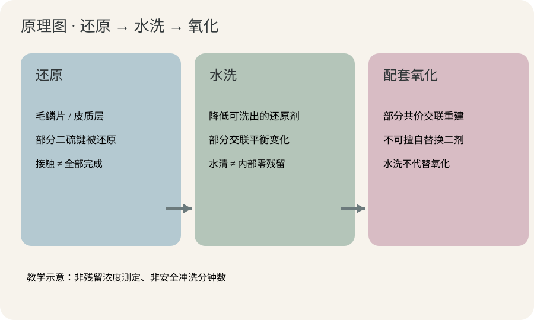
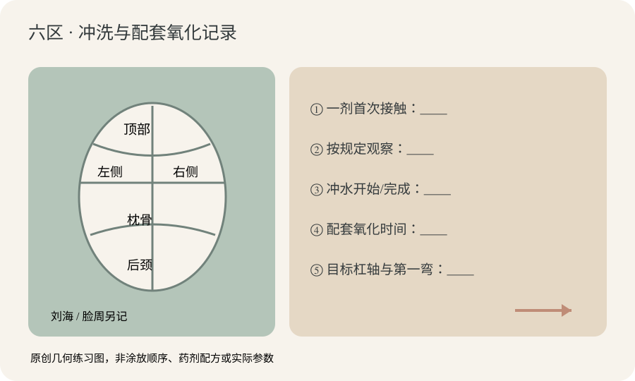
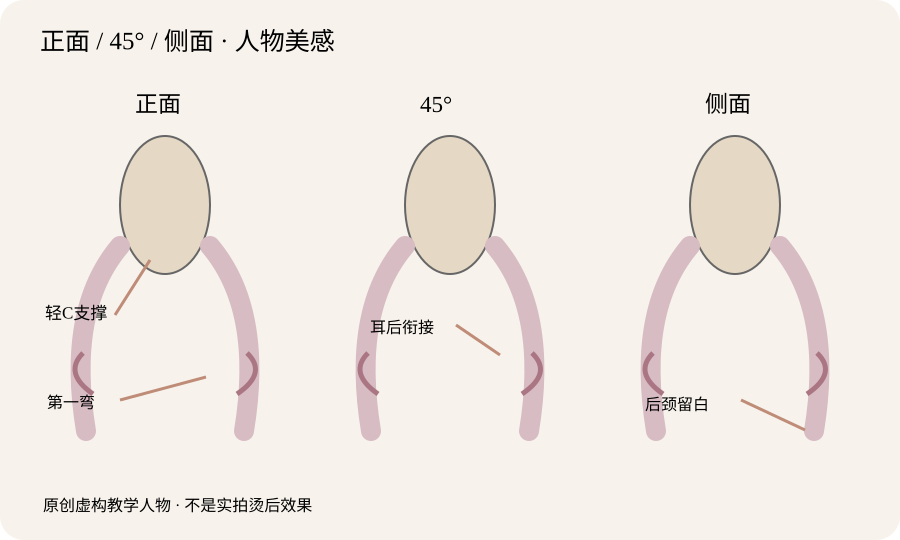

2026-11-10
【今日核心问题】一剂冲水后，为什么水清不代表内部还原反应瞬间结束？
【新增判断】昨日研究单次拉伸、机械疲劳与梳理阻力；今天区分表面冲洗、内部还原剂浓度、部分二硫键平衡变化及后续氧化，不重复旧课。冲水是完整化学程序，不是可以随意省略的洗头步骤。
【毛发内部】毛鳞片是外层重叠结构，影响保护、摩擦和物质传递；皮质层含角蛋白中间丝IF及角蛋白相关蛋白KAP基质，承担主要弯曲、拉伸和恢复；部分毛发有髓质。二硫键是较持久的共价交联；氢键对水敏感，参与吹整与复湿变化；盐键、离子相互作用与疏水作用也维持角蛋白稳定。不能将毛发理解成“还原时全部打开—氧化时全部锁死”的开关。
【水洗的化学意义】TGA等厂家允许的体系在涂放后发生表面接触、内部扩散及部分可接近二硫键还原。冲水能够降低可洗出的还原剂浓度。在特定TGA实验体系中，随着还原剂浓度降低，部分KAP间二硫键可通过平衡逆向变化恢复。水洗后的反应不一定瞬时停止；但不能据此认为水洗替代配套氧化，也不能由“流出的水清了”认定内部还原剂为零。
【时间与顺序】先涂和后涂各区首次接触不同；应记录各区首次接触、厂家规定观察、冲水开始与完成、允许的中间步骤及氧化时刻。是否可在水洗后等待、多久等待，必须看产品说明，不能直接照搬离体论文，也不能自行规定统一冲洗分钟数。
【水分、张力、热、干燥与氧化】水影响氢键、塑化及黏弹性；杠径、杠轴、发片厚度、尾纸、圈数和温和张力建立卷绕几何。厂家兼容热烫中的时间、温度、含水条件及干燥影响水分迁移和结构响应；机器显示温度不是发芯实测。干燥和冷却引起物理状态变化，但冷却不等于二剂氧化；配套氧化参与部分共价交联重建。材料学中的玻璃化、应力松弛有助理解湿热形变，却不能作为热烫机通用温度处方。
【pH和化学历史】TGA、半胱胺及门店简称CA需核对实际成分；pH、有效浓度、缓冲体系和作用条件不同，相同pH不代表相同药力。经验“软化60%”不是实测断键率。一剂与二剂不得跨品牌随意混用。健康新生发、染后中段及旧漂再染发尾需分别诊断。若出现异常湿态伸长、恢复不良、发黏、断丝或头皮刺激，停止相关高风险处理，不把它当作“软化已好”。最终卷度弹性、持久与损伤受到结构历史、完整工艺、卷绕几何与日常整理共同影响。
【近7天科研核查】优先检索2026年11月3日至10日的原始研究；没有确认可为所有市售热烫/冷烫药剂规定统一真人冲水时间的近期可靠研究，未将近期营销宣称当作科研证据。本课采用三项与“还原—水洗—氧化”直接相关的已发表离体实验。
【研究1】Kazuyuki Suzuta、Kunihiro Hamada、Kozo Arai，Reproduction Mechanism of SS Cross-Links in Permed Hair by the Washing after Reduction with Thioglycolic Acid，2015-02-10，Sen'i Gakkaishi，DOI 10.2115/fiber.71.112。类型：原始毛发力学与交联模型实验。结论：在该TGA—水洗—溴酸钠体系中，水洗降低还原剂浓度，可伴随部分KAP分子间二硫键的逆向恢复。证据强度：中，直接实验但仅为特定体系，含产业研发背景。能支持：冲水阶段并非纯粹外观步骤。不能证明：全部产品同机制、全部残留瞬间归零、可以取消氧化或指定顾客通用分钟数。
【研究2】Kyohei Joko、Keiko Sakurai、Yukari Morimoto，Effects of Some Waving Treatment Conditions on the Permanent Waving Performance of Human Hair，2013-01-10，Sen'i Gakkaishi，DOI 10.2115/fiber.69.8。类型：离体毛束还原/水洗/氧化与机械条件实验。结论：活性还原物种浓度、初始卷绕受力和氧化步骤均可能影响卷曲表现。证据强度：中，原始实验可核验，但样本及配方有限。能支持：最终卷度不是只由冲水外观决定。不能证明：真人可照搬论文的浓度、时间、张力。
【研究3】Keiko Sakurai、Kyohei Joko，Effects of Some Relaxation Treatments on the Waving Performance of the Permanent Waving Procedure of Human Hair，2010-11-10，Sen'i Gakkaishi，DOI 10.2115/fiber.66.272。类型：原始离体毛束水洗后松弛与氧化实验。结论：研究体系中水洗后的松弛环节可能影响卷曲。证据强度：中，有实验，但不能外推各种配方。能支持：水洗—氧化间的物理状态有独立研究意义。不能证明：所有产品都可以额外延长等待、改变二剂或节省冲洗。
【证据分层】科研解释特定体系的机制；厂家标签和技术书决定真人操作的pH、药力、冲水/加热/氧化要求；教材规范术语；向里造型八步与六区只作为门店练习经验，不冒充临床验证。
【模拟教学案例｜虚构成人，非真实顾客】31岁女性，都市知性偏浪漫；偏方圆脸、颧骨中等偏宽、下颌略方、头顶稍平、后枕已有中等圆度、颈偏短、肩中宽。自然干长度锁骨下约8厘米，原有低至中低层次，下摆较厚。顶部密度中等、细软；两侧中等、左耳前较少；后枕较密粗硬；后颈密、自然毛流左上，右耳后向外；自然轻C波纹。新生根区约7厘米，中段一年内两次棕色氧化染，末端约3厘米曾漂浅后再染暗。经常夹板、隔天洗发、偏好自然干，能接受每天5分钟整理。
【需求与参考图】顾客说“自然、不要太卷、显脸小、洗完好打理”。照片为吹整后的顶部柔C、颧骨旁较收、下颌下第一弯、锁骨附近松S、后颈轻盈。先核对顾客希望洗后自然干还是轻吹5分钟；照片与日常状态不能保证一致。
【最大风险】虚构助手在后枕先涂一剂，之后完成两侧，仅记“全头涂完”时刻；冲水看到水清，另一位助手想换不同品牌二剂并自由延长等待。这会混淆分区接触差、内部残留未知和产品兼容性。旧漂尾若湿态明显失弹、发黏、断丝，停止进一步高风险化学和热操作。绝不以“水清”证明内部100%已洗净。
【八步方案】①风格职场知性加自然浪漫；②人物：方圆脸/平顶/短颈/侧后较多；③长度以自然干底线与安全有效长度为准；④特点顶部柔支撑、颧骨旁不过鼓、后颈清爽；⑤层次侧后保守低—中低，保留左耳前覆盖；⑥刘海偏分弱C或不卷；⑦下颌稍下第一弯、锁骨松S；⑧自然干与5分钟轻吹双状态展示。
【剪裁与诊断】顶部细软不打碎，左耳前密度少保留重量；后枕已有圆度，不盲目增加体积；后颈释放过量底线重量。将新生、染后、旧漂分区标记及回弹风险。旧漂尾不适合继续烫时重估有效长度，必要时双S改为单柔C，不用强药、小杠或高热强行维持方案。
【药剂及pH】只有取得实际型号、成分、适用毛发、禁忌、氧化剂及设备兼容的厂家技术说明，才能选择对应TGA/半胱胺等完整体系，CA简称需核对成分。未指定产品时不编造pH、浓度、涂放顺序、软化分钟数。按实际说明执行并记录每区一剂首次接触、规定观察、冲水开始/完成、允许的冲后步骤和配套氧化时刻；异常伸长不代表理想软化。
【冲水后的毛发】按厂家步骤彻底冲洗，记录持续滴水、均匀湿润、局部偏干等可见状态（不是实测含水率）。确认安全有效发长、发片能平铺、尾纸平顺无折返、温和一致张力。薄厚发片与杠轴服务于第一弯；右耳后毛流外向可先无药试排不同方向，不强求机械镜像。
【六区杠位｜仅公仔头几何候选】顶部外径30–34毫米/提升20–40°轻C；枕骨28–32毫米/15–35°自然衔接；两侧30–36毫米/10–30°下颌下第一弯；后颈可不卷或轻C；刘海脸周顺毛流弱C或不卷。提升角以局部头皮切线0°为参考，数值不是真人烫发配方；实际圈数根据安全有效发长、工具外径及卷绕路径安排。
【热/干燥/氧化】如采用厂家允许的热烫，严格遵守相互兼容的设备、温度、时间、初始湿态、干燥、冷却、拆杠及配套氧化步骤；冷烫则按相应无额外加热全流程。不能用水洗或冷却代替氧化，屏显温度不是发芯温度，明显灼热或刺激应停下。成品应正面顶部柔C、颧骨不鼓；45度耳后枕骨连续；侧面后颈留白。若局部松卷，先复核化学历史、分区时间、厂家水洗和氧化程序、卷绕及吹整，不默认补药补热。
【正面】方圆脸、顶部略平：可建立有限柔C支撑，但增高不是越高越好；颧骨最高处不应突然放最大横向体积。把第一弯与最大卷度分开，第一弯可选下颌稍下，主松S靠近锁骨，耳前稀疏区保留必要密度。
【45度】看额角—太阳穴—耳后—枕骨的流向与重量是否连续。右耳后向外根向可通过公仔头无药试排微调杠轴，两侧技术非镜像不意味着视觉不协调。若耳后突然鼓起，先检查层次、毛流和第一弯，不能单由外观推出药水残留。
【侧面】后枕已有自然圆度，不宜过度堆高；颈偏短、后颈密度较大，肩颈位置不要集中全部底线重量与最大S，注意后颈留白。若换成长颈窄肩、发量少的人物，可能保留更多侧后宽度，不能照搬固定脸型公式。
【五个视觉定位点】顶部支撑高点、第一弯、最大横向蓬松点、最强卷度、自然干底线，五者不必重合。卷度弹性持久要与顺滑毛束和可在五分钟内整理的生活方式统一；化学流程正确不代表人物设计自动正确。
【全部为原创轻量SVG教学示意，非显微实测或真实顾客效果】图一：毛发外层毛鳞片、皮质层/角蛋白，在“还原→水洗→氧化”三个分栏中的作用。箭头表示概念顺序；水洗可降低可洗出的还原剂浓度，不能证明瞬间零残留，不能代替配套氧化。图二：六区记录和分区排杠技术图，把顶部、左右、枕骨、后颈、刘海脸周与“接触/规定冲水/氧化”记录并列；箭头只标记记录和目标流向，不代表通用涂放顺序或安全分钟数。图三：抽象人物正面、45度和侧面，用灰粉标明顶部柔C、下颌下第一弯、耳后枕骨衔接及后颈留白；不是实拍成品证据。逐图看箭头、发区和相对人物比例。



【全部为公仔头无药无热几何练习；外径与提升角为候选值、未经真人统一验证】顶部：30–34毫米/局部切线参考20–40°，柔C支撑，落杠和夹具避免压根、根向与角度不合避免炸根。枕骨：28–32毫米/15–35°，补自然圆度，平整发片与尾纸、温和张力；相邻第一弯错位时检查杠轴及实际卷入长度。左右两侧：30–36毫米/10–30°，下颌稍下第一弯，锁骨附近松S；左耳前保留发量，右耳后外向根流试排非镜像卷向。圈数随有效发长、杠径和实际绕行而定，不存在“2.5圈必得双S”。后颈：可以不卷，或轻C候选角0–15°，重点控制肩线堆积；不强行逆根向。刘海脸周：依有效长度和额角发旋选择弱C或不卷，不规定通用角度。
【错误及纠正】压根看杠位夹具；炸根看根向提升；折痕看尾纸/局部张力；尾翘看发尾折返/毛流；断层看分区第一弯；流向冲突看杠轴交界；后颈堆积看层次与重量。今天新增：冲水后不能只看水清就判断还原结束、擅自延长松弛或混用二剂；必须核对厂家完整步骤。
【先问五个问题】①自然是要洗后自然干有形，还是愿意五分钟轻吹？②不要太卷，是不喜欢密集小卷还是连第一弯也想淡？③显脸小主要想调整颧骨、下颌还是耳后？④哪些段漂染烫过，湿态是否失弹/断丝？⑤旧漂尾不适合处理能否接受减少一道S？
【模拟门店对话】顾客：“冲水看到水清了，是不是就能随便换二剂？” 发型师：“表面冲干净不代表我能肉眼确认内部反应瞬间结束。我们会按这套产品说明冲洗，并使用厂家允许的配套氧化体系。” 顾客：“多冲一会或者多等10分钟是不是更好？” 发型师：“不能这样保证，研究只针对特定TGA实验体系，我们不能把论文的时间套在你头发上。” 顾客：“我只想自然、不要太卷、显脸小。” 发型师：“那先确定你的有效发长和第一弯：顶部柔C、颧骨旁不鼓、下颌下柔弯、锁骨松S。旧漂尾状态不佳要调整设计，不用强药硬做。” 顾客：“洗完也能像照片？” 发型师：“照片有吹整因素，我们会展示自然干和五分钟轻吹的实际区别。”
【可复制话术】“冲水是完整烫发工艺的关键环节，我们不会凭水看着清就判断内部药剂全部消失，也不会随意混用其他品牌二剂。会依据你不同区域的漂染历史，按当前产品说明完成冲洗与配套氧化，再结合脸型、肩颈和生活打理习惯设计顶部、第一弯与松S；做完让你看到自然干及简单吹整的状态。”
【先独立练五题】模拟中长发顾客：后枕粗硬新生发先涂一剂，两侧染后发后涂，旧漂发尾约3厘米。一剂冲水见水清。助理称“内部还原剂已100%没有、随便换二剂、再等10分钟更好”。没有产品型号或技术书。①至少三处错误？②各区哪些时间必留痕？③旧漂段湿态异常伸长怎样处理？④从人物三视角如何定位第一弯？⑤科研能证明什么，不能证明什么？
【完整参考答案①】水清不是定量残留检测；水洗不替代氧化；跨品牌二剂不能默认兼容；自行延长等待无依据。2015年的特定TGA试验揭示水洗期可能发生平衡逆向变化，不能证明所有产品一样。
【答案②】记录各区化学历史、首次接触、按产品规定观察、冲水起止、允许的中间步骤、氧化起止及操作人；计时规则依真实厂家，不自行从全头涂完换算。
【答案③】明显湿态失弹、发黏或断丝即停止相关高风险处理，重评安全有效长度；双S可改柔C或温和临时整理，不补药补热强拉。
【答案④】正面顶部有限支撑，颧骨处不要突然最宽，第一弯可下颌稍下；45度检查耳后与枕骨，右耳后外毛流可无药试排；侧面后颈别将强卷全部堆在短颈肩线。无唯一脸型答案。
【答案⑤】能支持：某些体系冲水降低还原剂浓度并伴随交联/力学变化；不能证明：水清=零残留、跳过氧化、普适冲水分钟数或具体品牌药力。
【思考路径】发质安全及厂家兼容→分区真实时间→规定水洗/氧化→安全有效长度→八步人物设计→六区公仔头试排→自然干与轻吹对比，不从结果倒推出虚构化学数据。
【唯一低风险实验】目的：让员工知道“流出水看着接近无色”不等于“毛束内部完全不存在可洗出物”，训练控制变量，不模拟真实TGA反应。
【材料】8束同来源、等长等量的离体毛束，适合常温离体教学的可洗食品级色素水、两类预量清水、同一支架与容器、量杯、计时器、白底手机固定机位、温湿度计；不用还原剂、二剂、漂粉或热设备，不接触真人。若示踪剂无法确认适合安全使用，则改用惰性纤维模型。
【唯一主动变量】冲洗总水量：A组较少、B组较多；色素类型/上色水量/接触时长、毛束质量、初湿、冲洗方向、环境和拍摄机位一致。尽量固定冲洗历时；如因水量改变流速，须记录其混杂限制。此水量无真人操作含义。
【步骤】①编号A01–A04、B01–B04，拍起始状态；②用同一色素液常温浸润同一时间；③按照A/B水量冲洗并收集末次流出液；④记录末次流出液色度和发束颜色，轻去滴水；⑤24小时同机位复拍；⑥再清水复洗两轮，记录每轮发束与流出液，保留无差异和反例；⑦不对顾客实施。
【空白记录表】A01–A04：冲洗水量=小组预设量，末次流出液颜色=待测，发束颜色=待测，24小时=待测，复洗1/2=待测；B01–B04：冲洗水量=较大组预设量，同样全部待测。统一记录毫升、温湿度与观察条件；颜色0–3级仅内部感官分类，不是化学定量。
【边界与转化】实验尚未实施，绝不虚构结论。即使末次水接近透明，也不能宣布内部示踪物绝对为零；食品色素不能代表TGA扩散、二硫键重建或氧化剂。将“厂家规定冲水/氧化+分区时间记录+不以水清代表化学终点”列入门店日常练习和发质分析表，不把实验用水量移作真人SOP。
【1个原理】TGA等特定体系的水洗可以降低可洗出的还原剂浓度，有时还伴随部分二硫键平衡逆向变化；但水洗、机械松弛与配套氧化是不同步骤。
【1个错误】看见冲洗水清，就认定毛发内部100%零还原剂，随意更换二剂、延长中间等待或省略氧化。
【下次观察】在公仔头模拟六区“首次接触→规定冲水起止→配套氧化”记录，结合正面/45度/侧面的第一弯与后颈重心检查，只采纳真实厂家SOP。